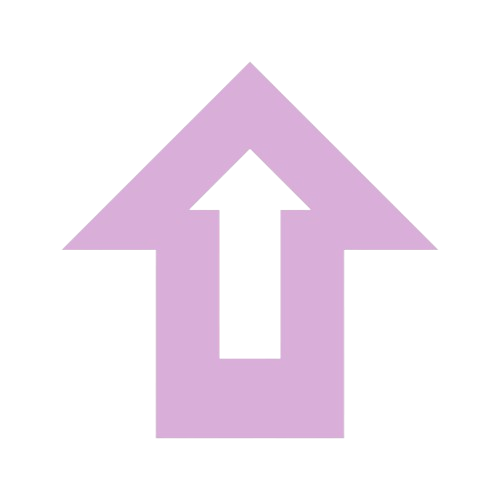

KyberTurva
Home ▾
Mitä on tieto- ja kyberturvallisuus?
Kyberturvallisuusstrategia
Uutiset
Koulutukset
Kyberuhat
Uutiset
Täältä löytyy ajankohtaisia uutisia liittyen Suomen ja maailman kyberturvaan.
Uutiset
Koulutus
kyberuhat
Kyberturvallisuuskeskus - Päivittäinen Uutiskooste
Kyberturvallisuuskeskus - Kaikki Ajankohtaista
Kyberturvallisuuskeskus - Tietoturva Nyt
Hacker News
